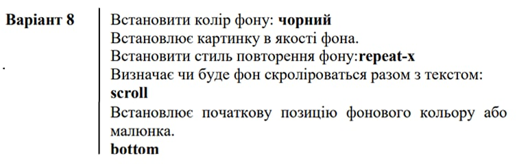

Кинематограф (от греч. κινημα, род. п. κινηματος — движение и греч. γραφω — писать, изображать) — отрасль человеческой деятельности, заключающаяся в создании движущихся изображений. Иногда также упоминается как синематограф (от фр. cinematographe, устар.) и кинематография. Кинематограф был изобретен в XIX веке и стал крайне популярен в XX веке.
В понятие кинематографа входят киноискусство — вид современного изобразительного искусства, произведения которого создаются при помощи движущихся изображений, и киноиндустрия (кинопромышленность) — отрасль экономики, производящая кинофильмы, спецэффекты для кинофильмов, мультипликацию и, демонстрирующая эти произведения для зрителей. Произведения киноискусства создаются при помощи кинотехники. Изучением кинематографа занимается наука киноведение.
Влияние кинематографа на культуру и искусство бесспорно, огромно влияние кинематографа на политику и экономику. Во многих странах киноиндустрия является значимой отраслью экономики. Производство кинофильмов сосредоточено на киностудиях. Фильмы демонстрируются в кинотеатрах, по телевидению, распространяются «на видео» в форме видеодисков.
Хотя первый примитивный цветной фильм (с красно-зеленой гаммой, без синего цвета) вышел еще в 1922 году, он не впечатлил зрителей. Первый «полноценно цветной» короткометражный фильм системы «Technicolor» под названием «La Cucaracha» вышел в 1934 году. Первый же полнометражный цветной фильм «Бекки Шарп» американского режиссера армянского происхождения Рубена Мамуляна вышел в 1935, этот год и принято считать годом появления цветного кино. В СССР первый игровой цветной фильм «Груня Корнакова» был снят уже в 1936 году.
